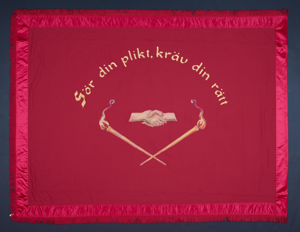

Vad är en fana?
En symbol för någonting. Det var mycket stort och viktigt att en förening fick en fana. Det var en symbol för förningen med ett långsiktigt budskap.
Syftade till ena gruppen och betraktades som nästan lite heliga. Fanan användes enligt Margareta på bastillefester och årsfester. Samt jubileum och
begravningar. Alla gånger som man hade någonting att fira. Man hade en högtidlig invigning av fanan. Sjöng fansånger och anordnade supé samt bal.
Man hade endast en fana, som användes tills den blev utsliten. Då tillverkades en ny. Margaretas egen teori är att de båda sidorna av fanan har olika
syfte. Ena sidan riktade sig utåt och den andra inåt mot gruppen. Man skiljer på fana och standard. Standard är en fana som sitter fast på ett toppemblem
upptill. Har ofta tofsar. Den röda fanan blev symbolen för arbetarrörelsen. Den liberala arbetarrörelsen hade vita fanor, som symboliserade fred. Enligt
Margareta var den vita fanan av okänd anledning mer vanlig i Uppsalatrakten, den hängde kvar längre tid. 1890 inleddes förstamajdemonstrationerna. Man sökte
tillstånd men fick inte, trots det firades det ändå på olika platser. Den röda färgen ansågs som farlig i början. Det var som en protest bara det.
Symbolik
Den tidigaste fansymboliken var frihetsgudinnan eller Marianne som hon kallades. Hade ofta en frygisk mössa. Stod på en jordglob vid en soluppgång. Hälsar
den nya dagen. I början satt Marianne på visdomens sten. När fanan blev röd så reste hos sig och trampade på ondskans orm (ibland maktens svärd). Inspirationen
kom från Danmark. I Norge är det en helt annan bildtradition. Verkar där ha kommit in sjövägen, möjligtvis en tysk tradition. Skåne var först. Den första röda
fanan kom 1883. Symbolik som påminner om frimurare, men det finns ingen dokumenterad koppling. På 30-talet förändrads symboliken. även män på fanorna, ofta med
vanliga kläder.
Nykterhetsrörelsen talar om ”nykterhetens sol”. Det händer ibland också att en sagoliknande figur (man) rider på en vit häst. Detta har man dock helt glömt bort
betydelsen av. Hermesstaven med två slingrande ormar är en symbol för handel och diplomati. Det är lite skillnad mellan politiska och fackliga fanor. De fackliga
bilderna visar den egna erfarenheten i arbetslivet. Hantverksföreningarna kunde ha en arbetssymbol i form av ett verktyg eller en arbetsprodukt, grovarbetarnas
fanor visade det kollektiva arbetet och alla visade vikten av gemensam kamp för bättre arbetsvillkor och demokratiska rättigheter. Handslaget var viktigt för
fackföreningar. Kvinnorörelsens fanor har en manshand och en kvinnohand.
Målningar och broderier
Fanans motiv bestämdes av föreningen som sedan lät en fankonstnär måla fanduken. Det växte fram stora fanateljéer och där arbetade fankonstnärer. Fankonstnär
blev ett yrke mot slutet av 1800-talet då efterfrågan på både arbetarrörelsefanor och andra folkrörelsefanor var stor. De kunde vara dekorationsmålare eller
fotografer i botten. De har dock sällan signerat med namn. Man känner dock igen stilen och kan ibland gissa sig till vem det var. Kända fankonstnärer var Ida
Mellgren i Trollhättan och Lindeblad i Örebro. En annan konstnär Hellberg känns igen på en nästan svart jordglob och ulliga moln. I Stockholm fanns Selma Sandberg
som också målade fanor. Målningen var allmänhet oljefärg på en grund av äggvita men flera fanmålare konstruerade egna färgsammansättningar. Det kunde finnas lite
gift i färgen, detta för att fanan skulle kunna rullas. Några fanor broderades av en brodös. Kvinnoföreningen gjorde ofta själva sina fanor. Då blev det bara
broderier och inga bilder. Kunde ta upp emot ett år att brodera stora motiv (därav kostanden).
Tyget
Materialet i fanorna var till en början siden men det sköra materialet ersattes ibland av ylle som var mer hållbart i demonstrationernas hårda vindar. Tunt fint
ylle som ofta förväxlas med siden. Man kan inte säga säkert vilket material det är utan noggrann undersökning.
På 60-talet började det komma syntetfanor. Lättare att bära i demonstrationstågen. Blandning av tryck och handmålat. Nu är det digitaltryck.
Valspråk
Pionjärtidens fanor: Frihet, jämlikhet, broderskap. Enighet är makt
Folkhemsperiodens fanor: Demokrati, fred, frihet och ansvar
Vår tids fanor: Tillsammans är vi starka
Källa: Margareta Ståhl